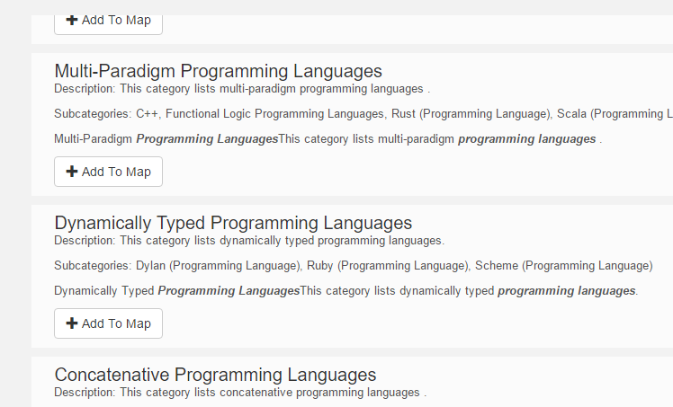
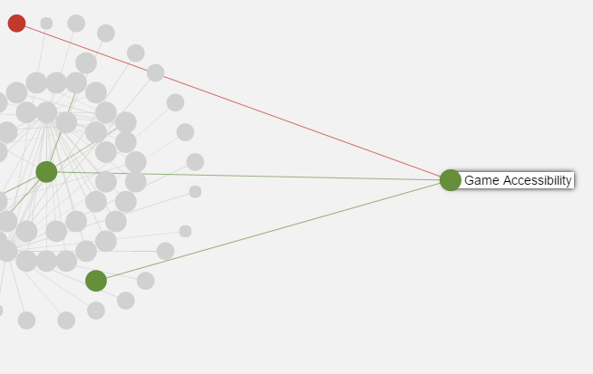
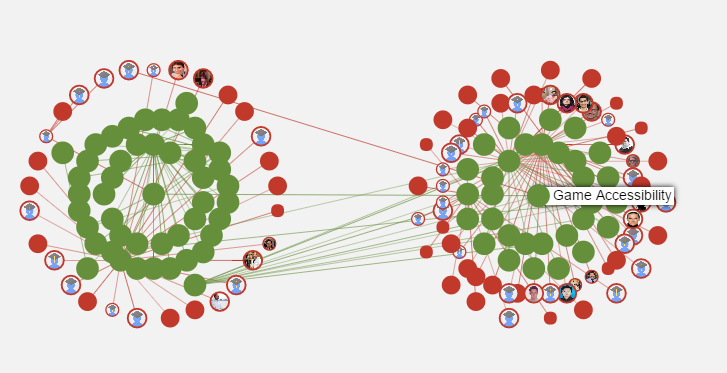
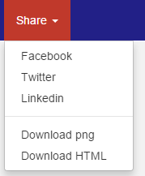

Due to insufficient fund, the data server for this website (charges more than $70 a month, which is sort of expensive for a student without income) is temporarily terminated. You can refer to this page about the original utilities.
If you're really interested in how academicmap works or you need to do some significant search with it, tell me by corey.hdu@gmail.com, I may be willing to start that server for you. (01/30/2017)
(This beta version supports Chrome only)
Academic Map is a search engine to find academic information and their relations with a map
Any comment, suggestion and question, please visit the Google Group or send us an email
1. Search any academic words and people
2. Click "Add To Map" button on the card that you want to analyze

1. click "Map" tab on the nav bar, you will find the node that was just added. There are two kinds of nodes, reds with photo stand for people, greens stand for research area.
2. right click the node, you can find some options
2.1 click "extend -> 1 hop -> Area only " will extend the map by the node by 1 hop of all related areas
2.2 click "extend -> 2 hop -> Auto " will extend the map by those most relevent nodes that are 2 hop from the center node
2.3 click "keep" will keep this very node and remove all other nodes on the map, thus you can start analyzing for this node
connection between people means they cooperated research paper together, connection between person and research field means the research interest of him or her
2.4 click "path" button to find the networks among nodes
3. Drag a node to your desired layout and find your ROI
 Click "Share" to share the map via those most popular social medias, or download it and do what ever you want!

Any comment, suggestion and question, please visit the Google Group or send us an email